Decade
1960s
64 books
-
ቼ በለውቼ በለው Che Belew Bilaten Geta Mahiteme Silase Wolde Meskel · 1969
-
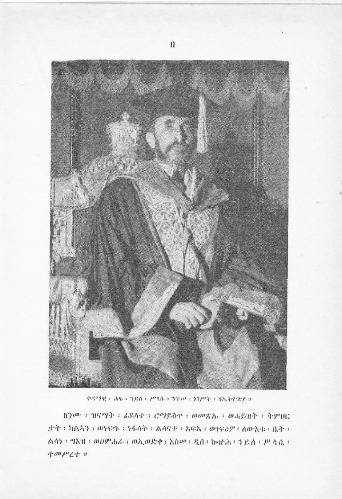
ዐዲስ ያማርኛ መዝገበ ቃላት adis yamarnya mezgebe qalat ደስታ ተክለ ወልድ · 1969 -
የኢትዮጵያ ታሪክ (ከዐፄ ቴዎድሮስ እስከ ቀዳማዊ ኃይለ ሥላሴ)የኢትዮጵያ ታሪክ (ከዐፄ ቴዎድሮስ እስከ ቀዳማዊ ኃይለ ሥላሴ) Ye'Ethiopia tarike ke'atse Tewodros eske Kedamawi Haile Sllassie Tekletsadek Mekuria · 1969
-
ብሉይ ኪዳን (ስምንቱ ብሔረ ኦሪት ወመጽሐፈ ኩፋሌ)ብሉይ ኪዳን (ስምንቱ ብሔረ ኦሪት ወመጽሐፈ ኩፋሌ) Biluy Kidan ( Simintu Bihere Orit the Metshafe Kufale) · 1963
-
በአማርኛ የሚነገሩ ጥቅሶች ምሳሌዎችና ፈሊጦችበአማርኛ የሚነገሩ ጥቅሶች ምሳሌዎችና ፈሊጦች BeAmrgna Yeminegeru Tkisoch Ena Felitoch Gorfu Gebre Medhn · 1968
-
የኢትዮጵያ ጥናትና ምርምር መጽሔትየኢትዮጵያ ጥናትና ምርምር መጽሔት Journal of Ethiopian Studies Vol.VI No.2 (July 1968) Albert G.Gerard, Stanislaw Chojnacki, Francis Anfrey · 1968
-
ያጤ ቴዎድሮስ ታሪክያጤ ቴዎድሮስ ታሪክ YaTe Tewodros Tarik Some Unknown Ethiopian Author · 1967
-
ፍሬ:ከናፍር :: ዘቀዳማዊ ኃይለ ሥላሴ ንጉሰ ነገስት ዘኢትዮጵያ (፭ኛፍሬ:ከናፍር :: ዘቀዳማዊ ኃይለ ሥላሴ ንጉሰ ነገስት ዘኢትዮጵያ (፭ኛ መጽሐፍ) Fre Kenafir Ze Kedamawi Haile Silase Ze Ethiopia (Volume 5) Blata Mrsaie Hazen Wolde Kiyorkis · 1969
-
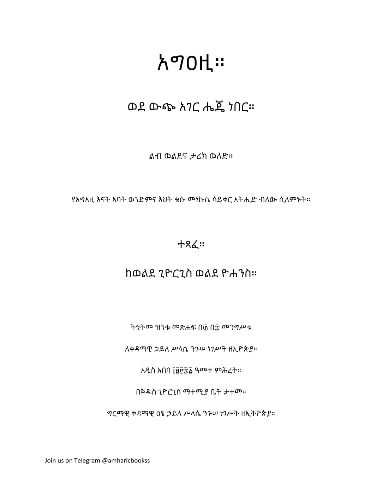
አግዐዚ ወደ ውጭ አገር ሔጄ ነበር agazi wede wech ager heje neber ወልደ ጊዮርጊስ ወልደ ዮሐንስ · 1968 -
The Afersata: An Ethiopian NovelThe Afersata: An Ethiopian Novel Sahle Sellassie · 1968
-
የአባላሽኝ ዘመንየአባላሽኝ ዘመን YeAbalshign Zemen Tadesse ZeWolde · 1961
-
ኢትዮጵያ በዓለም ጋዜጦች አስተያየትኢትዮጵያ በዓለም ጋዜጦች አስተያየት Ethiopia In the World Press · 1968
-
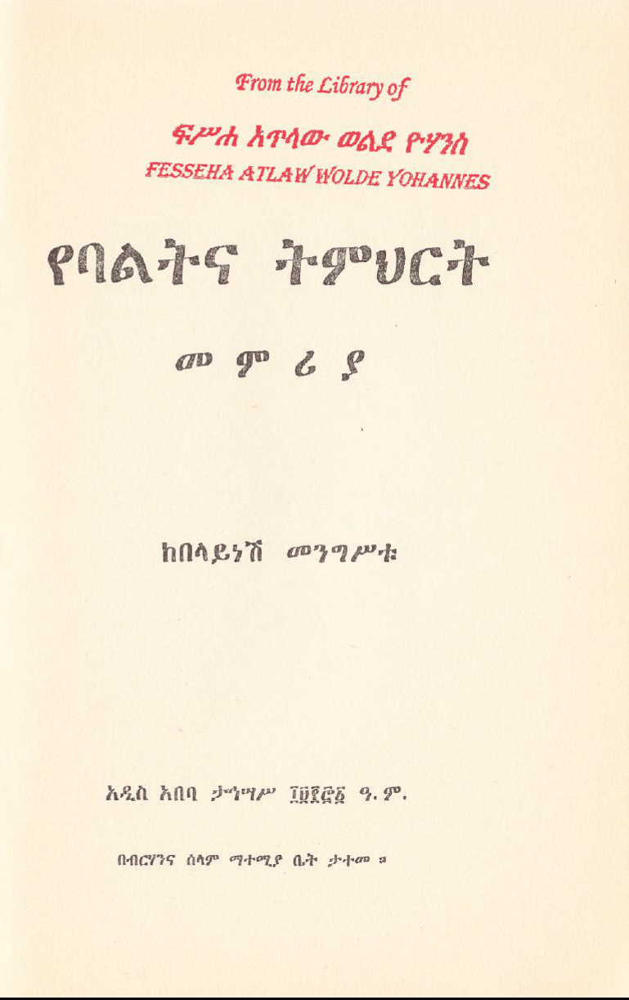
የባልትና ትምህርት መምሪያ yebaletna temeheret memriya በላይነሽ መንግሥቱ · 1962 -
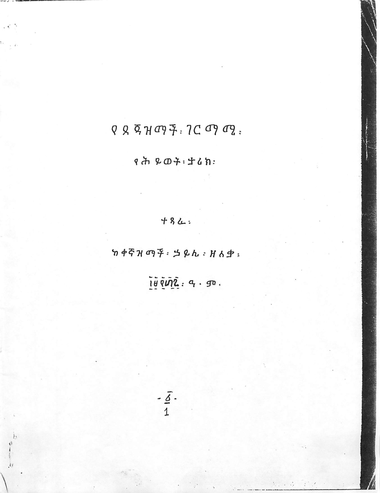
የደጃዝማች ገርማሜ የሕይወት ታሪክ yedejazmach germame yeheywet tarik ቀኛዝማች ኃይለ ዘለቃ · 1964 -
ጥንታዊው የቆሎ ተማሪጥንታዊው የቆሎ ተማሪ Tintawiw Yeqolo Temari Memihir Kidane Mariam Getahun · 1962
-
ሰውና ዕድሜውሰውና ዕድሜው Sewina Edmew Mekonen Zewdie · 1961
-
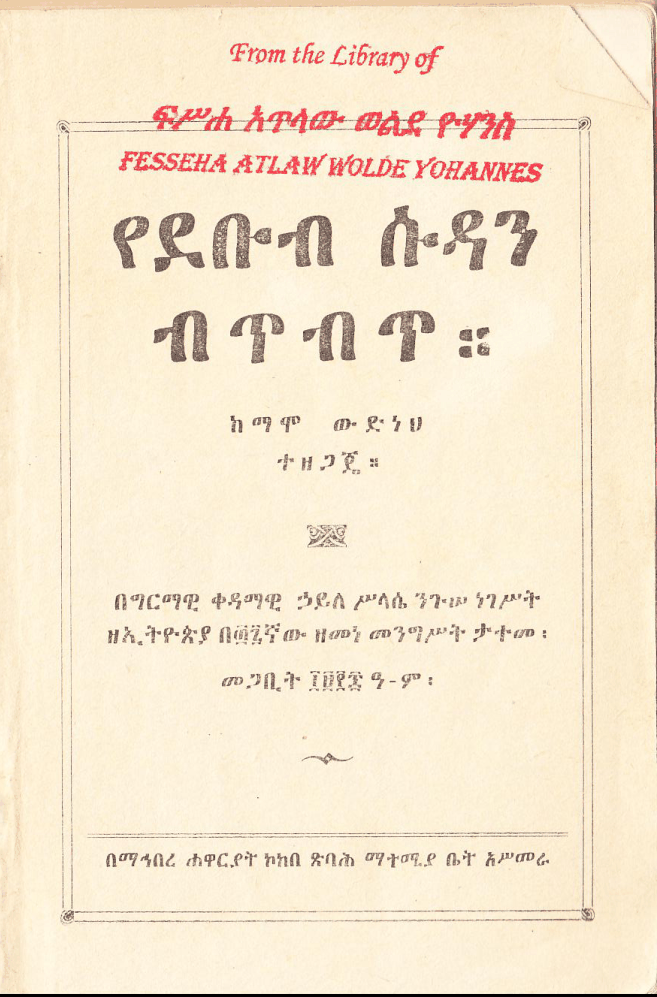
የደቡብ ሱዳን ብጥብጥ yedebub sudan betebet ማሞ ውድነህ · 1965 -
አደፍርስአደፍርስ Adefris Dagnachew Worku · 1969
-
የእናቶቻችን ሞያየእናቶቻችን ሞያ YeEnatochachin Moya Leilet Tsige Mariam G/Rufael · 1966
-
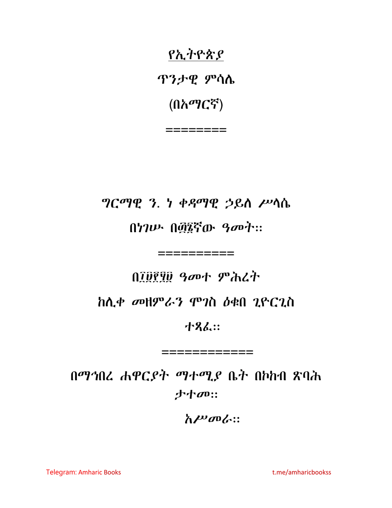
የኢትዮጵያ ጥንታዊ ምሳሌ (በአማርኛ) yeityopya tentawi mesale (beamarnya) ሊቀ መዘምራን ሞገስ ዕቁበ ጊዮርጊስ · 1966 -
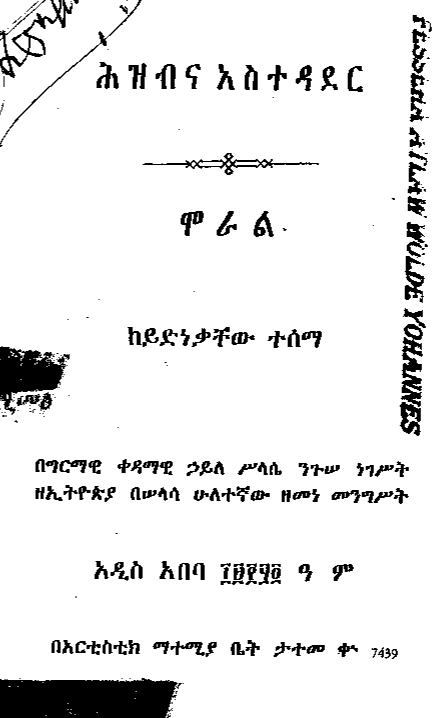
ሕዝብና አስተዳደር ሞራል hezebna astedader moral ይድነቃቸው ተሰማ · 1961 -
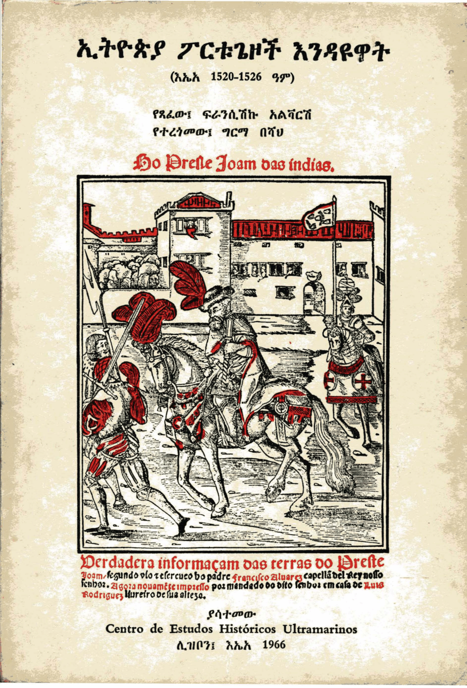
ኢትዮጵያ ፖርቱጌዞች እንዳዩዋት Verdadeira informaçam das terras do Preste Joam ፍራንሲሽኩ አልቫርሽ, ግርማ በሻህ, Merid Wolde Aregay · 1966 -
በዓፄ ገላውዴዋስ ዘመን መንግስት በኢትዮጵያ የተሰራ የፖርቹጋሎች ጀግንበዓፄ ገላውዴዋስ ዘመን መንግስት በኢትዮጵያ የተሰራ የፖርቹጋሎች ጀግንነት BeAtse Gelawdewos Zemene Mengist BeEthiopia Yetesera YePortugalcoh Jegninet Miguel De-Castanhozo · 1960
-
 አደፍርስ
adeferes
ዳኛቸው ወርቁ · 1969
አደፍርስ
adeferes
ዳኛቸው ወርቁ · 1969
-
ከአድማስ ባሻገርከአድማስ ባሻገር Ke Admas Bashager በአሉ ግርማ · 1969
-
 ጥንታዊ ምሳሌ
tentawi mesale
ሊቀ መዘምራን ሞገስ ዕቁበ ጊዮርጊስ · 1966
ጥንታዊ ምሳሌ
tentawi mesale
ሊቀ መዘምራን ሞገስ ዕቁበ ጊዮርጊስ · 1966
-
መች ተለመደና ከተኩላዝምድናመች ተለመደና ከተኩላዝምድና Mech Telemedena Ketekula Zimdina Aleka Ayalew Tamiru · 1961
-
የኢትዮጵያ ጥናትና ምርመራ መጽሔትየኢትዮጵያ ጥናትና ምርመራ መጽሔት Journal of Ethiopian Studies Vol.IV No.2 (July 1966) F.S Lister & F.Lister, F.P.Cotterell, M.Abir · 1966
-
አልወለድምአልወለድም Alwelledim Abbe Gubeñña · 1962
-
የኢትዮጵያ ጥናትና ምርመራ መጽሔትየኢትዮጵያ ጥናትና ምርመራ መጽሔት Journal of Ethiopian Studies Vol.VII No.2 (July 1969) Fride Hylander, Richard Pankhurst, Bairu Tafpla · 1969
-
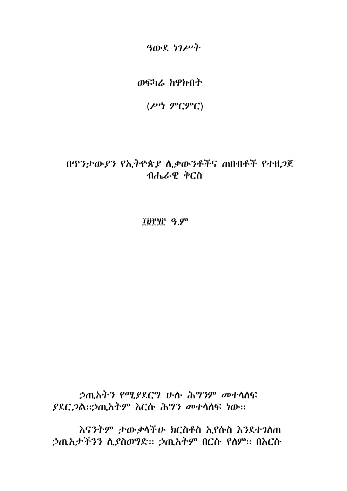
ዓውደ ነገሥት ወፌካሬ ከዋክብት (ሥነ ምርምር) awde negeset wefekare kewakebet (sene meremer) · 1960 -
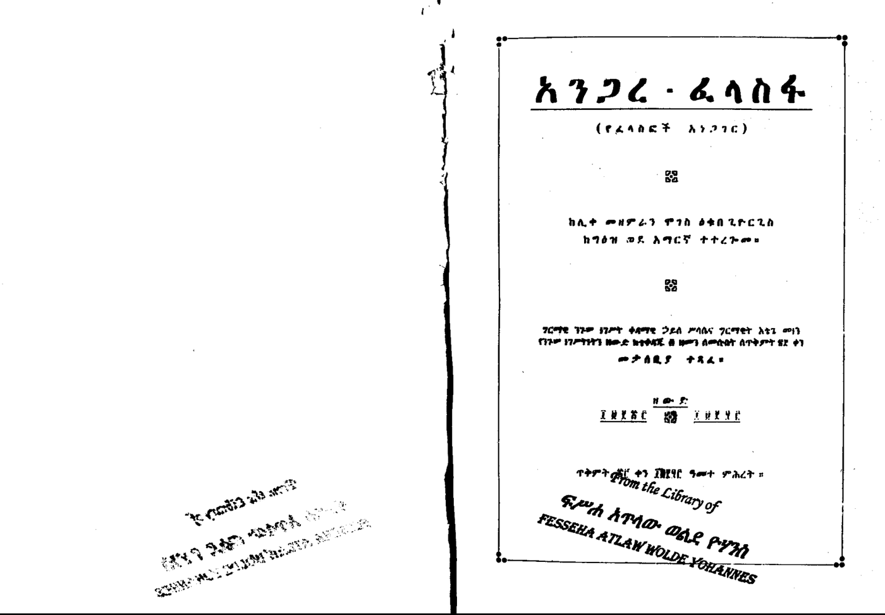
አንጋረ ፈላስፋ (የፈላስፎች አነጋገር) angare felasfa (yefelasfoch anegager) ሊቀ መዘምራን ሞገስ ዕቁበ ጊዮርጊስ · 1963 -
የታሪክ ቅርስየታሪክ ቅርስ Yetarik Kiris Seyfu Abawelo · 1961
-
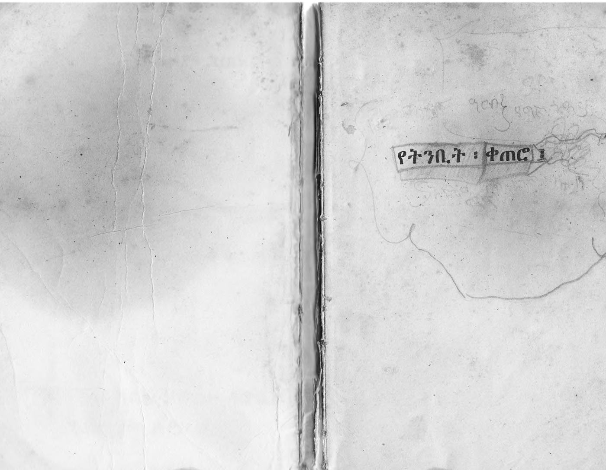
የትንቢት ቀጠሮ yetenbit qetero ከበደ ሚካኤል · 1965 -
ታሪከ ዘመን ዘ ዳግማዊ ምኒልክ ንጉሠ ነገሥት ዘኢትዮጵያታሪከ ዘመን ዘ ዳግማዊ ምኒልክ ንጉሠ ነገሥት ዘኢትዮጵያ Tarike Zemen Ze Dagmawi Minilik Niguse Negest ZeEthiopia Tsafie Tie'zaz Gebre Silase · 1964
-
 ፍቅር እስከ መቃብር
Fikir Eske Mekabir
ሀዲስ ዓለማየሁ · 1965
ፍቅር እስከ መቃብር
Fikir Eske Mekabir
ሀዲስ ዓለማየሁ · 1965
-
1.በዓድዋ አውራጃ የተገኙ ቅርሶች 2.የዓፄ ላሊበላ ገድል ከግዕዝ ወደ1.በዓድዋ አውራጃ የተገኙ ቅርሶች 2.የዓፄ ላሊበላ ገድል ከግዕዝ ወደ አማርኛ የተተረጎመ 1. BeAdwa Awraja Yetegegnu Yetarik Kirsoch 2. YeAtse Lalibela keGe'ez wede Amargna Yeteteregome · 1962
-
 ባሻ አሸብር በአሜሪካ + የፖለቲካ ግጥሞች
basha asheber beamerika + yepoletika getmoch
ካሣ ወርቅነህ · 1967
ባሻ አሸብር በአሜሪካ + የፖለቲካ ግጥሞች
basha asheber beamerika + yepoletika getmoch
ካሣ ወርቅነህ · 1967
-
 መጽሐፍ ቅዱስ
metshef qedus
Woded Ministry · 1962
መጽሐፍ ቅዱስ
metshef qedus
Woded Ministry · 1962
-
በስነጽሁፍ ውድድር ሽልማት ያስገኙ ድርሰቶችበስነጽሁፍ ውድድር ሽልማት ያስገኙ ድርሰቶች Besinetshuf Wididr shilimat Yasigegnu Wididiroch Ministry of culture, Sport · 1964
-
የምክር ቤታችን እድል (ከልጅነት እስከ እውቀት) ኃይለ ሥላሴ የዤኔቭየምክር ቤታችን እድል (ከልጅነት እስከ እውቀት) ኃይለ ሥላሴ የዤኔቭ ቁልፍ YeMikir Bietachin Edil (Kelijinet eske Ewket) Haile Silase YeZenev Kulf Kebdede Engida Sew · 1961
-
መሪ መጽሐፍ ለኢትዮጵያመሪ መጽሐፍ ለኢትዮጵያ GUIDE BOOK OF ETHIOPIA THE CHAMBER OF COMMERCE · 1962
-
አማርኛ ቅኔአማርኛ ቅኔ Amarigna Kine Bilatena Geta Mahiteme Silase Welde Meskel · 1967
-
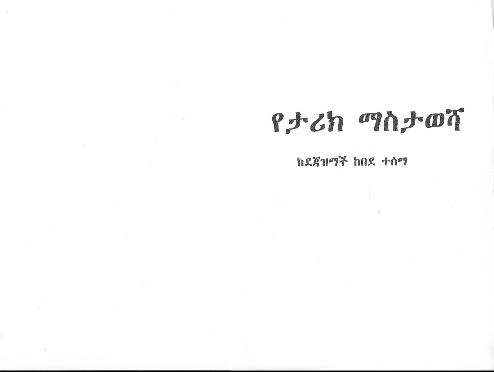
የታሪክ ማስታወሻ yetarik mastawesha ደጃዝማች ከበደ ተሰማ · 1965 -
ቀሪን ገረመው የአርበኞች ታሪክቀሪን ገረመው የአርበኞች ታሪክ Kerin Geremew YeArbegnoch Tarik Tadesse ZeWelde · 1968
-
የኢትዮጵያ የጥንት ስእሎችየኢትዮጵያ የጥንት ስእሎች YeEthiopia Yetint S'eloch Kebede Michael · 1969
-
የኢትዮጵያ ጥናትና ምርመራ መጽሔትየኢትዮጵያ ጥናትና ምርመራ መጽሔት Journal of Ethiopian Studies Vol.V, No.2 (July 1967) Richard Pankhurst, David Hamilton, R.Cowley · 1967
-
ዳኝነትዳኝነት Dagninet Bilata KItaw Yitatequ · 1962
-
ሕዝብና አስተዳደር ሞራልሕዝብና አስተዳደር ሞራል Hizibina Asitedader Moral Yidinekachew Tesema · 1962
-
ፍሬ ከናፍር ዘ ቀዳማዊ ኃይለ ሥላሴ ንጉሠ ነገሥት ዘኢትዮጵያ (ቅጽ 4ፍሬ ከናፍር ዘ ቀዳማዊ ኃይለ ሥላሴ ንጉሠ ነገሥት ዘኢትዮጵያ (ቅጽ 4) Fre-kenafir Ze Kedamawi Haile silase Nguse Negest ZeEthiopia (Volume 4) Bilata Mersaie Hazen Wolde Kiorkis · 1967
-
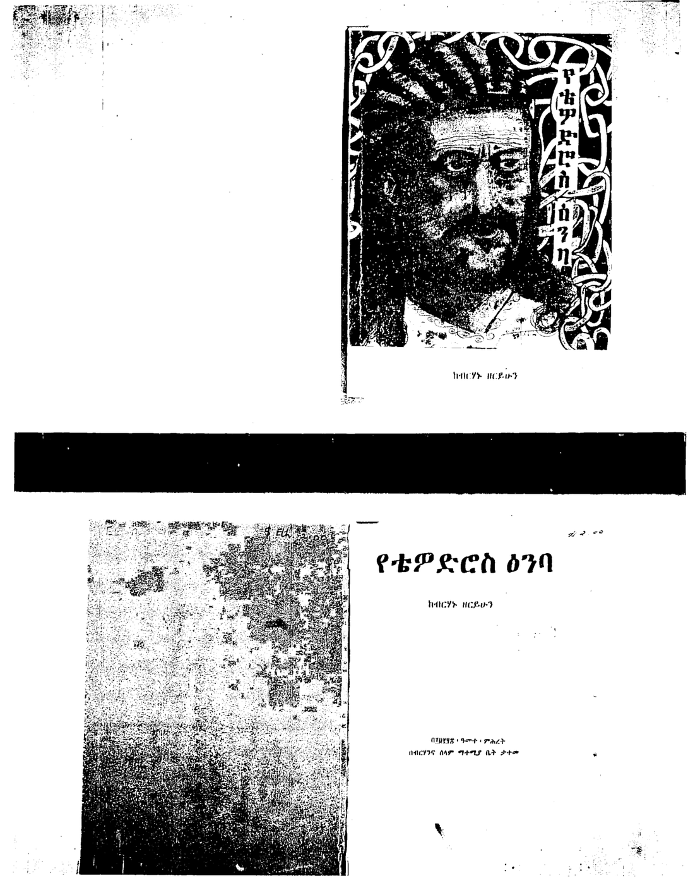
የቴዎድሮስ ዕንባ yetewodros enba ብርሃኑ ዘርይሁን · 1965 -
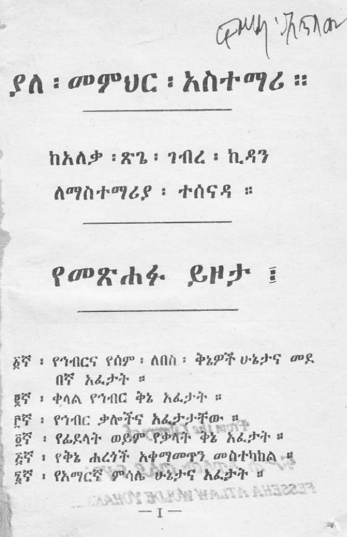
ያለ መምህር አስተማሪ yale memeher astemari አለቃ ጽጌ ገብረ ኪዳን · 1965 -
የኢትዮጵያ ጥናትና ምርመራ መጽሔትየኢትዮጵያ ጥናትና ምርመራ መጽሔት Journal of Ethiopian Studies Vol.IV No.1 (January 1966) Richard Pankhurst, Marvin L. Bender, C.F Beckingham · 1966
-
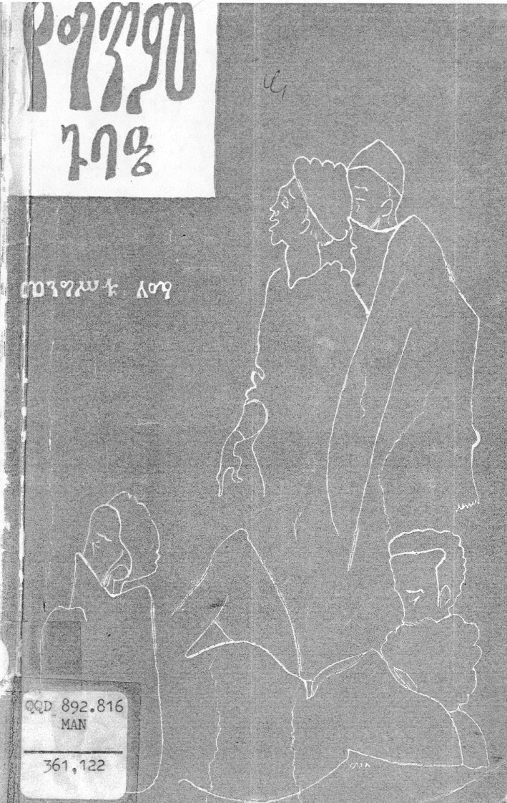
የግጥም ጉባኤ yegetem gubae መንግሥቱ ለማ · 1966 -
ግርማዊነታቸው ባሜሪካ አገርግርማዊነታቸው ባሜሪካ አገር Girmawinetachew BeAmerica Ager Kebede Michael · 1966
-
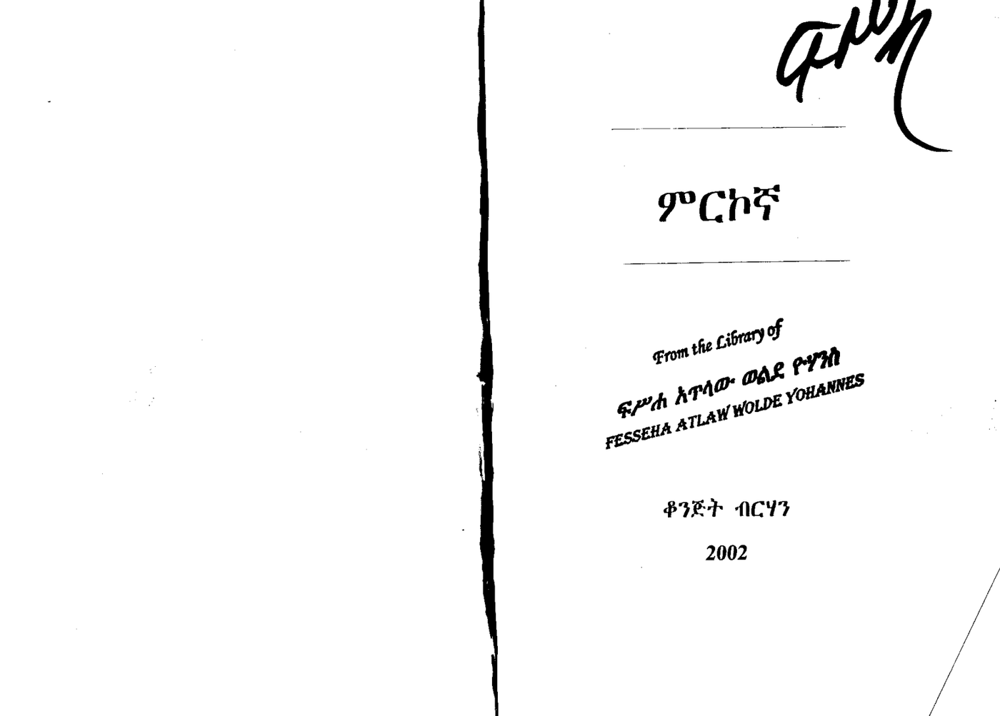
እንቅልፍ ለምኔ eneqelef lemne ባላምባራስ ማኅተመ ሥላሴ ወ መ · 1965 -
የኢትዮጵያ ታሪክ (ከዐፄ ልብነ ድንግል እስከ ዐጼ ቴዎድሮስ)የኢትዮጵያ ታሪክ (ከዐፄ ልብነ ድንግል እስከ ዐጼ ቴዎድሮስ) Ye'Ethiopia tarike ke'atse Libne Dingel eske Atse Tewodros Tekletsadek Mekuria · 1969
-
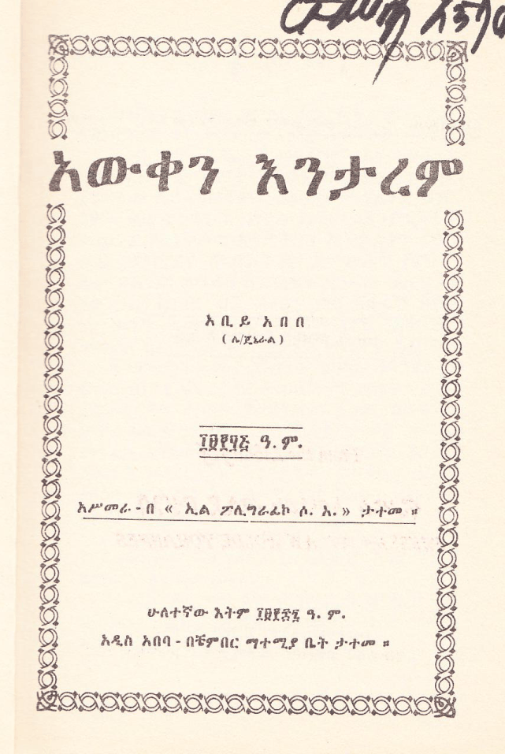
አውቀን እንታረም Awken Enetarem አቢይ አበበ · 1963 -
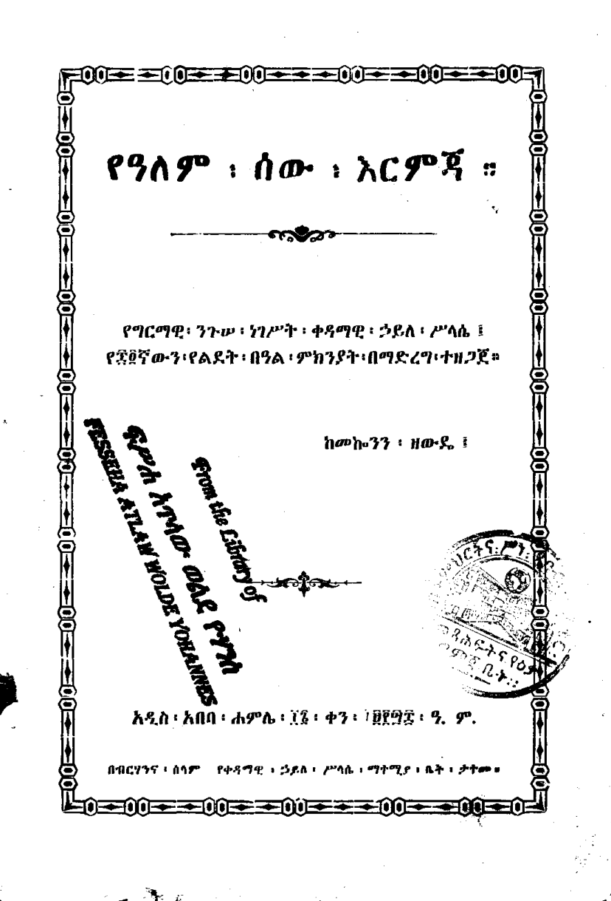
የዓለም ሰው እርምጃ yealem sew eremja መኩንን ዘውዴ · 1965 -
 ምልክአም “ሰይፈ ነበልባል”
melekam “seyfe nebelbal”
አቤ ጉበኛ · 1963
ምልክአም “ሰይፈ ነበልባል”
melekam “seyfe nebelbal”
አቤ ጉበኛ · 1963
-
ፍሬ ከናፍር ዘ ቀዳማዊ ኃይለ ሥላሴ ንጉሠ ነገሥት ዘኢትዮጵያ (ቅጽ 3ፍሬ ከናፍር ዘ ቀዳማዊ ኃይለ ሥላሴ ንጉሠ ነገሥት ዘኢትዮጵያ (ቅጽ 3) Fre-kenafir Ze Kedamawi Haile silase Nguse Negest ZeEthiopia (Volume 3) Bilata Mersaie Hazen Wolde Kiorkis · 1965
-
አውራ ጣትአውራ ጣት Awera Tat Kebede Habte Mariam · 1967
-
ያላቻ ጋብቻያላቻ ጋብቻ Yalacha Gabicha Mengistu Lemma · 1964
-
 መንግሥትና የሕዝብ አስተዳደር
menegesetna yehezeb astedader
ነጋድራስ ገብረ ሕይወት ባይከዳኝ, ጳውሎስ መናመኖ · 1960
መንግሥትና የሕዝብ አስተዳደር
menegesetna yehezeb astedader
ነጋድራስ ገብረ ሕይወት ባይከዳኝ, ጳውሎስ መናመኖ · 1960